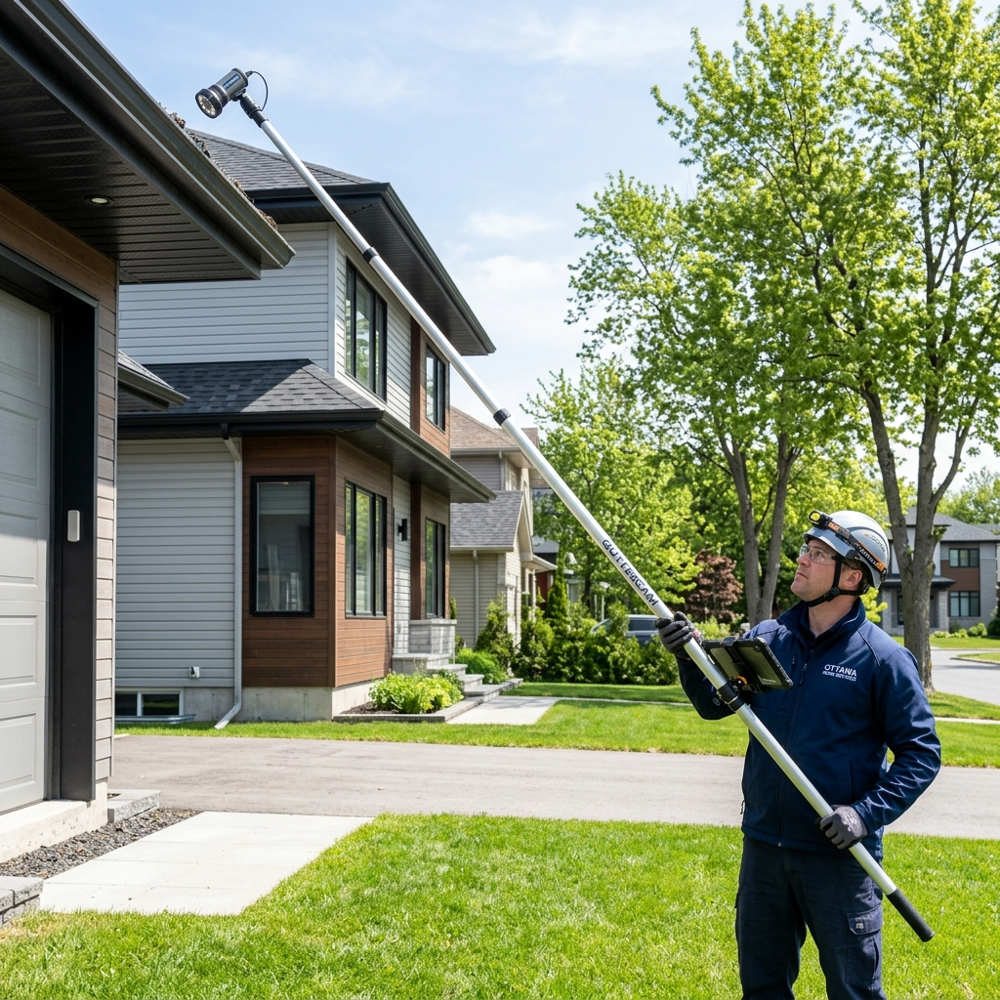

Camera-Pole Gutter Inspections & Video Validation
Over time, gutters gather debris, dirt, and mold that can clog your downspouts and cause water damage to your home's foundation or roof. But climbing a tall ladder to inspect your gutters is dangerous and difficult. Our student team at CreekCare provides a safe, quick, and highly professional gutter inspection service in Ottawa South Ottawa for only $35.
We use a high-definition camera attached to a long, telescoping pole to inspect every foot of your gutters safely from the ground. We capture clear, real-time video footage of the interior of your gutters and downspouts. After the inspection, we present this video validation directly to you. You can see the exact condition of your gutters—whether they are clean, clogged, or showing signs of damage—with your own eyes before deciding on any cleanout services!
What is Included:
- Safe, ground-level telescoping camera pole inspection (up to 2 stories).
- High-definition video recording of the gutter interior and downspouts.
- Direct sharing and review of the video footage with the homeowner.
- Actionable recommendation report and cleanout estimate if clogging is found.
Frequently Asked Questions
How do you inspect gutters without a ladder?
We use a specialized telescoping inspection pole equipped with a high-definition camera that feeds live video back to our ground monitors, allowing us to inspect your gutters safely from the grass.
What is the benefit of video validation?
Video validation provides you with clear, visual proof of the health of your gutters, so you can see if a cleaning is actually required rather than paying for unnecessary services.
How much does a gutter inspection cost?
Our camera-pole gutter inspection is a flat rate of $35. If you decide to book a gutter cleaning with us, the inspection fee is fully waived!